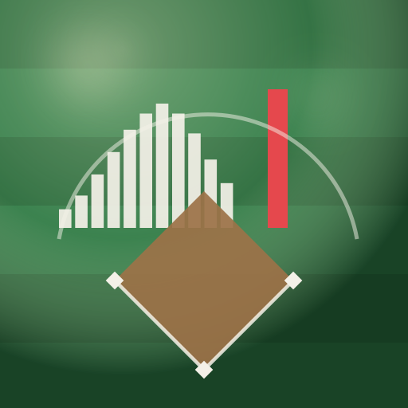
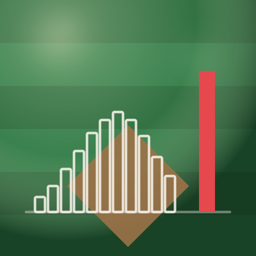
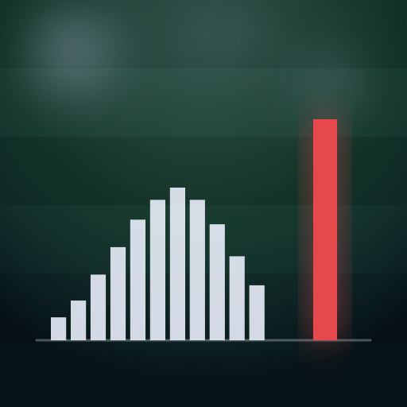

H1 — chalk histogram on striped turf, one red bar apart

H2 — aerial field, distribution on the outfield grass

H3 — chalk outline bars on the infield dirt

H4 — night turf, the red bar carrying its own light